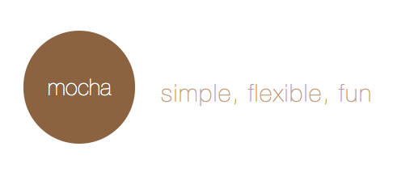

JavaScript Kata
Let's BDD a Blog
By Wassim Chegham@manekinekko
About me
About BDD
Introduced by Dan North, end of 2003 as an Enhancement to TDD
→ “Behaviour” is a more useful word than “test”
BDD provides a “ubiquitous language” for analysis:
As a [x]
I want to [y]
So that [z]
Given some initial context (the givens), When an event occurs, then ensure some outcomes.
to know more about BDD
head to Dan North's website
The tools
MochaJS
ChaiJS

Grunt

Yeoman

Sublime Text 2